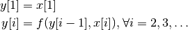

Scanning refers to the operation that applies a binary function recursively as follows:
Let x be an input vector and f be a binary operator, then the output y is a vector of the same length given by

For example, the function cumsum is a special case of array scanning.
This package provides both generic scanning functions, such as scan, scan!, mapscan, and mapscan!, as well as specialized scanning functions, such as cumsum and cumsum!, etc.
Synopsis
Let op be a binary operator, f1, f2, and f3 be respectively unary, binary, and ternary functors.
scan(op, x) # scan x using operator op
mapscan(op, f1, x) # scan f1(x)
mapscan(op, f2, x, y) # scan f2(x, y)
mapscan(op, f3, x, y, z) # scan f3(x, y, z)
scan!(r, op, x) # write the results of scanning of x to r
mapscan!(r, op, f1, x)
mapscan!(r, op, f2, x, y)
mapscan!(r, op, f3, x, y, z)
scan!(op, x) # inplace scanning of x using operator op
Both scan and scan! accepts a dimension argument for scanning vectors along a specific dimension.
scan(op, x, dim) # scan vectors of x along dim using operator op
mapscan(op, f1, x, dim) # scan vectors of f1(x) along dim
mapscan(op, f2, x, y, dim) # scan vectors of f2(x, y) along dim
mapscan(op, f3, x, y, z, dim) # scan vectors of f3(x, y, z) along dim
scan!(r, op, x, dim) # write the results of scanning of x to r
mapscan!(r, op, f1, x, dim)
mapscan!(r, op, f2, x, y, dim)
mapscan!(r, op, f3, x, y, z, dim)
scan!(op, x, dim) # inplace scanning of x along dim
Note: mapscan and mapscan! use efficient ways to scan the terms without creating a temporary array such as f1(x). Hence, mapscan(op, f1, x) is generally faster than scan(op, f(x)).
Examples
scan(Add(), x) # equivalent to cumsum(x)
scan(Add(), x, 1) # equivalent to cumsum(x, 1)
scan!(Add(), x) # writing cumsum(x) inplace (i.e. back to x)
For some common scanning operations, we provide specific functions to simplify the use.
# cumsum uses Add() as scanning operator
cumsum(x)
cumsum!(r, x)
cumsum!(x)
cumsum(f1, x)
cumsum(f2, x, y)
cumsum(f3, x, y, z)
cumsum!(r, f1, x)
cumsum!(r, f2, x, y)
cumsum!(r, f3, x, y, z)
# cummax uses MaxFun() as scanning operator
cummax(x)
cummax!(r, x)
cummax!(x)
cummax(f1, x)
cummax(f2, x, y)
cummax(f3, x, y, z)
cummax!(r, f1, x)
cummax!(r, f2, x, y)
cummax!(r, f3, x, y, z)
# cummin uses MinFun() as scanning operator
cummin(x)
cummin!(r, x)
cummin!(x)
cummin(f1, x)
cummin(f2, x, y)
cummin(f3, x, y, z)
cummin!(r, f1, x)
cummin!(r, f2, x, y)
cummin!(r, f3, x, y, z)